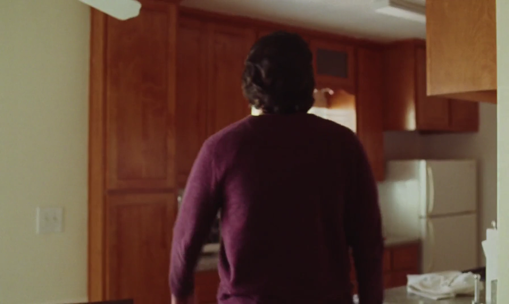
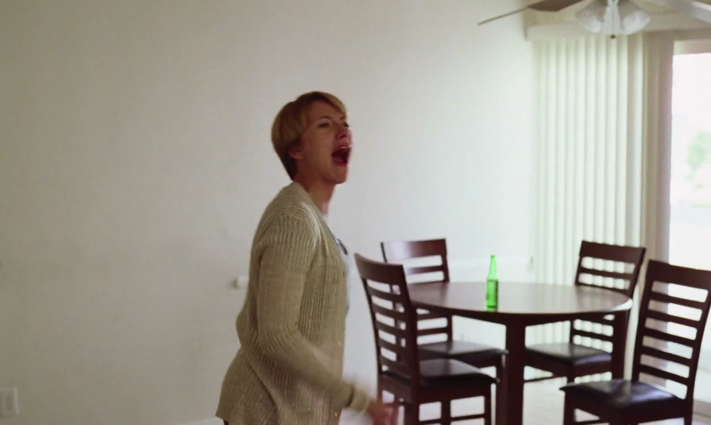
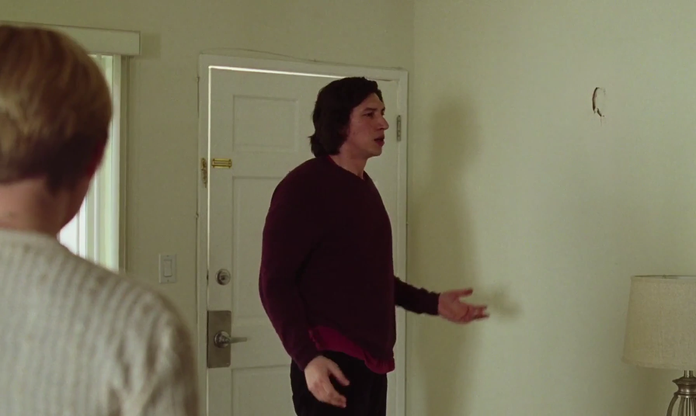

{kind=link}
| Abbrev | Film | Clip Start | Clip Stop | Duration |
|---|---|---|---|---|
| MarriageStory | Marriage Story (2019) | 01:37:24.000 | 01:41:24.000 | 240 |
Marriage Story
Film Information
Marriage Story is a 2019 drama film written and directed by Noah Baumbach, who also produced the film with David Heyman. It stars Scarlett Johansson and Adam Driver as a warring couple going through a coast-to-coast divorce. Laura Dern, Alan Alda, Ray Liotta, Julie Hagerty, and Merritt Wever appear in supporting roles.
All information in this section came from Wikipedia.
Clip Information
This clip shows a fight between Charlie and Nicole, a married couple going through divorce proceedings and a custody battle for their son Henry. Charlie is a theater director, and Nicole used to act in his plays when they lived in New York.
| Characteristic | Value |
|---|---|
| Format | MPEG-4 |
| File Size | 91.5 MiB |
| Duration | 240.032 |
| Frame Rate | 23.976 |
| Video Width | 1792 |
| Video Height | 1072 |
| Video BitRate | 2.9 MB/s |
| Audio Channels | 6 |
| Audio SamplingRate | 48000 |
| Audio BitRate | 341.3 kB/s |




Subtitles
The following wordcloud shows the words used in this clip, scaled by number of occurrences and colored by sentiment (orange = negative, green = positive, grey = neutral or unsure). Note that the words have been stemmed and lemmatized and stopwords have been removed.
{kind=link}
The following figure shows the estimated sentiment (VADER compound score) for each subtitle line (orange = negative, green = positive, grey = neutral or unsure).
{kind=link}
The table below shows all subtitles in this clip with the start and stop time of each subtitle’s appearance in seconds.
| Start | End | Subtitle |
|---|---|---|
| 0.296 | 2.340 | You're being so much like your father. |
| 2.841 | 4.258 | Do not compare me to my father! |
| 4.342 | 6.760 | I didn't compare you to him. I said you were acting like him. |
| 6.845 | 8.096 | You're exactly like your mother. |
| 8.179 | 11.307 | Everything you were complaining about her, you're doing. You're suffocating Henry. |
| 11.390 | 14.102 | First of all, I love my mother. She was a wonderful mother. |
| 14.185 | 16.520 | - I'm just repeating what you told me. - Secondly, how dare you |
| 16.604 | 18.439 | compare my mothering to my mother! |
| 18.522 | 21.484 | I may be like my father, but I am not like my mother! |
| 21.567 | 22.568 | You are! |
| 22.651 | 24.195 | And you're like my father! |
| 24.278 | 25.696 | You're also like my mother! |
| 25.780 | 27.991 | You're all the bad things about all of these people! |
| 28.491 | 29.575 | But mostly your mother. |
| 29.658 | 30.993 | When we would lie in bed together, |
| 31.077 | 33.913 | sometimes I would look at you and see her and just feel so gross! |
| 33.997 | 36.708 | - I felt repulsed when you touched me! - You're a slob. |
| 36.791 | 38.418 | I made all the beds, closed all cabinets... |
| 38.501 | 41.795 | The thought of having sex with you makes me want to peel my skin off. |
| 41.880 | 44.215 | You'll never be happy, in LA or anywhere. |
| 44.298 | 46.800 | You'll think you found some better opposite guy than me, |
| 46.885 | 49.262 | and in a few years, you'll rebel against him |
| 49.345 | 52.473 | because you need to have your voice, but you don't want a voice. |
| 52.556 | 54.850 | You just want to fucking complain about not having a voice! |
| 54.934 | 58.187 | I think about being married to you, and that woman is a stranger to me. |
| 58.729 | 61.189 | - I mean, we had a child's marriage. - You've regressed. |
| 61.274 | 63.902 | You've gone back to your life before you met me, it's pathetic. |
| 63.985 | 67.864 | People used to tell me that you were too selfish to be a great artist. |
| 67.947 | 69.658 | And I used to defend you. |
| 69.740 | 71.116 | They were absolutely right. |
| 71.200 | 73.912 | All your best acting is behind you. You're back to being a hack! |
| 73.995 | 77.165 | You gaslighted me! You're a fucking villain! |
| 77.248 | 80.709 | You want to present yourself as a victim because it's a good legal strategy? |
| 80.793 | 83.879 | Fine, but you and I both know you chose this life! |
| 84.422 | 86.299 | You wanted it until you didn't! |
| 87.341 | 89.593 | You used me so you could get out of LA. |
| 89.677 | 90.719 | I didn't use you. |
| 90.803 | 93.138 | You did, and then you blamed me for it! |
| 93.306 | 95.724 | You always made me aware of what I was doing wrong, |
| 95.808 | 97.100 | how I was falling short! |
| 97.185 | 98.895 | Life with you was joyless! |
| 98.978 | 101.523 | What, so then you had to go and fuck someone else? |
| 101.605 | 103.191 | You shouldn't be upset that I fucked her! |
| 103.274 | 105.151 | You should be upset that I had a laugh with her! |
| 105.234 | 106.069 | Do you love her? |
| 106.152 | 107.403 | No. |
| 107.486 | 109.947 | But she didn't hate me. You hated me. |
| 110.031 | 111.115 | You hated me. |
| 111.199 | 112.909 | You fucked somebody we worked with. |
| 112.992 | 115.494 | You stopped having sex with me in the last year. |
| 115.578 | 117.079 | I never cheated on you. |
| 117.163 | 118.247 | That was cheating on me! |
| 118.331 | 120.291 | But there was so much I could have done. |
| 120.374 | 123.002 | I was a director in my twenties who came from nothing |
| 123.086 | 126.255 | and was suddenly on the cover of fucking Time Out New York! |
| 126.339 | 129.300 | I was hot shit and I wanted to fuck everybody and I didn't. |
| 129.383 | 131.635 | And I loved you and I didn't want to lose you. |
| 131.719 | 134.555 | But I'm in my twenties, and I didn't want to lose that too, |
| 134.638 | 136.182 | and I kinda did! |
| 136.640 | 139.017 | And you wanted so much so fast. |
| 139.102 | 140.812 | I didn't even want to get married. |
| 140.895 | 142.481 | And fuck it! |
| 142.813 | 144.523 | There's so much I didn't do. |
| 144.607 | 147.276 | - Thanks for that! - You're welcome! |
| 147.360 | 150.529 | I can't believe I have to know you forever! |
| 150.613 | 152.698 | You're fucking insane! |
| 153.491 | 155.701 | And you're fucking winning! |
| 156.327 | 157.912 | Are you kidding me? |
| 158.287 | 160.123 | I wanted to be married. |
| 160.664 | 161.999 | I'd already lost! |
| 162.458 | 164.793 | You didn't love me as much as I loved you! |
| 166.670 | 168.339 | What does that have to do with LA? |
| 170.674 | 171.509 | What? |
| 171.592 | 175.012 | You're so merged with your own selfishness, |
| 175.096 | 178.224 | you don't even identify it as selfishness anymore! |
| 178.599 | 180.851 | You're such a dick! |
| 180.935 | 183.563 | Every day I wake up and I hope you're dead! |
| 183.646 | 186.690 | Dead, like if I could guarantee Henry would be okay, |
| 186.774 | 190.611 | I'd hope you'd get an illness, and then get hit by a car and die! |
| 210.381 | 212.425 | Oh, God! |
| 222.393 | 223.227 | I'm sorry. |
| 225.146 | 226.105 | Me too. |
Holistic Ratings
A total of 76 participants watched this film clip and then provided holistic ratings on how the entire clip made them feel. These holistic ratings were completed using five Positive Affect items (i.e., alert, determined, enthusiastic, excited, inspired) and five Negative Affect items (i.e., afraid, distressed, nervous, scared, upset), each rated on an ordinal scale from 0 to 4. The plot below shows the distribution of scale scores (boxplot plus individual ratings).
{kind=link}
Dynamic Ratings
A total of 76 participants watched this film clip and used the CARMA software to provide continuous (i.e., second-by-second) ratings of how it made them feel. These continuous ratings were made on a single emotional valence scale ranging from -4 (very negative) to 4 (very positive).
Chromodoris Plot
We can plot the distribution of all valence ratings per second of the film clip to get a sense of how its emotional tone changes over time. The solid black line represents the mean of all ratings and the yellow, green, and purple ribbons represent the central 50%, 70%, and 90% of the ratings, respectively.
{kind=link}
Inter-Rater Reliability
A Bayesian generalizability study was used to decompose the variance in ratings of this video clip into the following components: timepoint variance (in average ratings of each second, across raters), rater variance (in average ratings from each rater, across seconds), and residual variance (including second-by-rater interactions and measurement error). The lower and upper columns in the table below represent the boundaries of the 95% equal-tail credible interval. Note that we dropped the first 10 seconds of each clip (as rater “warmup” time).
| Component | Term | Estimate | Lower | Upper | Percent |
|---|---|---|---|---|---|
| Rater | Variance | 1.432 | 1.111 | 2.107 | 0.588 |
| Timepoint | Variance | 0.265 | 0.225 | 0.328 | 0.109 |
| Residual | Variance | 0.740 | 0.725 | 0.757 | 0.304 |
From these variance components, we can estimate inter-rater reliability of the ratings. There are many formulations of the two-way intraclass correlation (ICC), but the most relevant to our purposes here is the balanced average-measures consistency formulation or ICC(C,k).
| Term | Estimate | Lower | Upper | Raters | Error |
|---|---|---|---|---|---|
| ICC(C,k) | 0.965 | 0.958 | 0.971 | 76 | Relative |
Below, we can also visualize the posterior distributions of each of these parameters. Values with higher posterior density are more probable.
{kind=link}